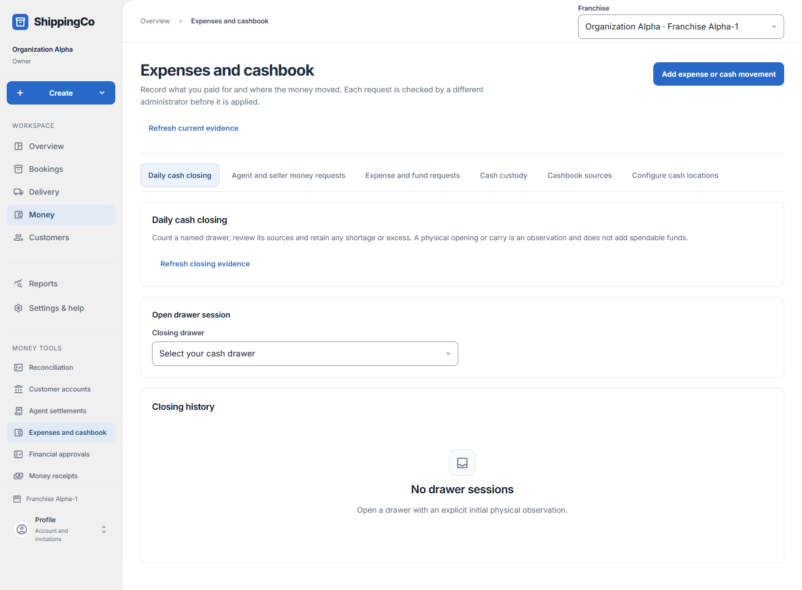

Closing a cash drawer
What this helps you do
- Compare a physical cash count with the drawer’s recorded activity.
Open this feature
- Money > Expenses and cashbook > Daily cash closing.
- Check the active branch first. Available actions depend on your role and the selected record.

Open the drawer session
- Choose Closing drawer to reveal its session controls. Inspect the latest drawer session before opening another. Select Business date.
- When an initial opening is required, enter Initial physical opening, Initial opening time in Kolkata and Opening reason, then Open drawer session.
- The permitted opening reviewer checks the exact evidence, enters Opening approval reason and selects Approve exact opening.
- For a wrong opening use corrected opening count, corrected opening time and supporting reason, then Save linked opening correction. Earlier evidence remains.
Count, submit and review
- Enter Physical ending count, Counted at and Count and difference explanation, then Save immutable count. The saved count cannot be overwritten.
- Review captured source records and the difference, then submit the exact saved count using the session action. Saving a count alone does not complete review.
- The permitted reviewer selects Closing review decision and enters Closing review reason, then Record closing review. Check status and revisions in Closing history.
- Use the offered linked correction or reopening action with its reason when needed. Carry-in observations do not spend or transfer funds.
Fields and when to use them
These fields belong to the actions above. Complete the fields for your selected action; optional filters may stay blank.
- Closing drawer: Select the closing drawer involved in this action; check its account and responsible person. Use when shown for the selected action.
- Business date: Enter the business date for this action, using the time zone shown. Required when this field is shown.
- Initial physical opening (₹): Enter the value in rupees, with at most two decimal places. Check the limit shown on screen. Required when this field is shown.
- Initial opening time (Kolkata): Enter when the event really happened. Use the time zone named in the label. Required when this field is shown.
- Opening reason: Explain why you are making this request or change. Use the real business reason. Required when this field is shown.
- Corrected opening count (₹): Enter the actual amount in rupees. Use no more than two decimal places. Required when this field is shown.
- Corrected opening time (Kolkata): Enter when the event really happened. Use the time zone named in the label. Required when this field is shown.
- Opening correction evidence and reason: Explain why you are making this request or change. Use the real business reason. Required when this field is shown.
- Opening approval reason: Explain why you are making this request or change. Use the real business reason. Required when this field is shown.
- Physical ending count (₹): Enter the actual amount in rupees. Use no more than two decimal places. Required when this field is shown.
- Counted at (Kolkata): Enter when the event really happened. Use the time zone named in the label. Required when this field is shown.
- Count and difference explanation: Explain the physical cash count and any difference from expected cash. Required when this field is shown.
- Closing review decision: Choose the state or decision that matches the record you have reviewed. Use when shown for the selected action.
- Closing review reason: Explain why you are making this request or change. Use the real business reason. Required when this field is shown.
If you need to retry
- No records: check branch, account or customer and filters. Use Load more where offered before deciding a record is missing.
- Invalid or missing value: read the form message, correct the draft, then review amounts and references again.
- Uncertain save: use the offered retry for the same request. Do not create a second payment, return, expense or application to guess whether the first saved.
- Changed evidence or policy: refresh current records and review them before a new request. A saved report retains its captured figures; create another report for current results.
About this guide
Checked against the current screen code on 1 November 2026. This explains app behaviour, not tax or accounting advice. Buttons and records can differ by role.